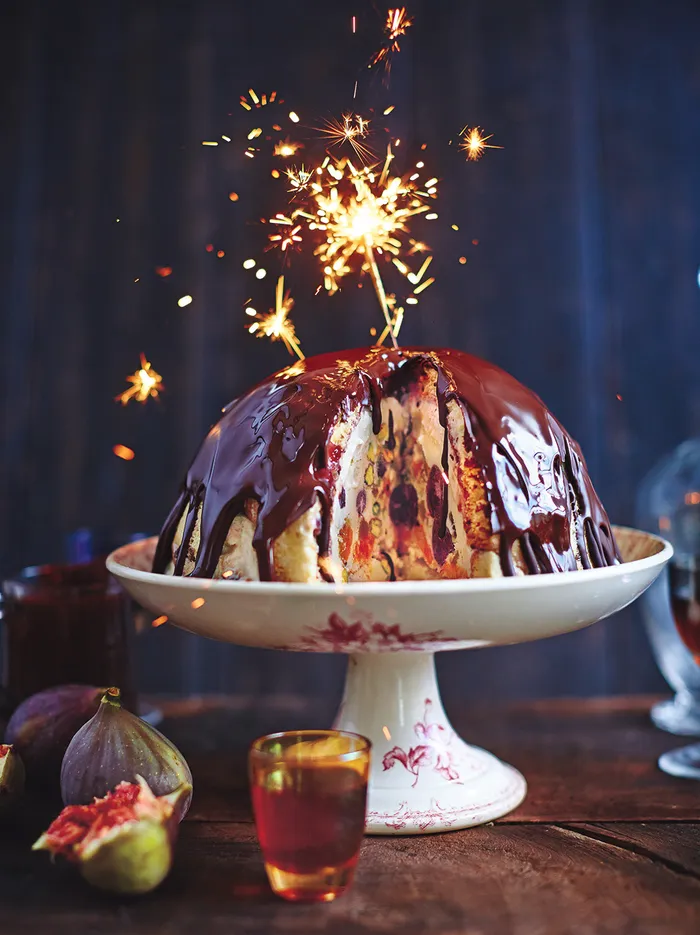

Winter Bombe

Description:
Ingredients:
- 2 x 500g tubs of quality vanilla ice cream
- 1 kg panettone
- 125ml Vin Santo
- 3 heaped tbsp quality raspberry jam
- 100g tinned cherries, in juice
- 75g glacé clementines (or other glacé fruit)
- 1 clementine
- 50g shelled pistachios
- 300g quality dark chocolate (70%)
- 25g unsalted butter
Steps
- Get the ice cream out of the freezer so it can soften a little while you get things ready. Line a 2 litre pudding bowl with three layers of clingfilm. Use a serrated knife to slice four 2cm-thick rounds off your panettone, then cut them in half. You’ll have some panettone left over, so keep this for another day. Arrange six of your panettone slices in a single layer around the inside of the bowl, pushing them down if they overlap. Drizzle some of the Vin Santo on to the panettone so it soaks in, then use the back of a spoon to spread the jam all over it.
- Drain the cherries, and thinly slice the glacé clementines. Finely grate the fresh clementine zest and put aside, then peel and finely slice the clementine into rounds. Spoon one tub of ice cream into the bowl, spreading it around in a thick layer. Sprinkle in the pistachios, cherries and glacé fruit, then layer on the clementine slices. Add the other tub of ice cream. Spread it out, working quickly so the ice cream doesn’t completely melt. Put the remaining two panettone slices on top of the ice cream, drizzle over the rest of the Vin Santo, then cover the bowl tightly with clingfilm. Press a plate down on top to push and compact everything down, pop a weight on, then freeze overnight, or until needed.
- Around 20 minutes before you want to serve it, unwrap your amazing winter bombe, carefully turn it out on to a beautiful serving dish, then leave to thaw slightly (I tend to transfer my bombe from the freezer to the fridge just before serving up the main to give it a head start). Snap up the chocolate, place in a heatproof bowl with the butter over a pan of gently simmering water on a low heat, and leave to melt. Once nicely melted, stir in the reserved clementine zest, then pour the chocolate over the pudding so it oozes down the sides and looks super-tempting and delicious. Serve up any extra sauce in a little jug.
See the full receipt at Jamie Oliver's Website